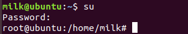
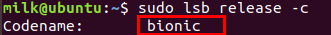
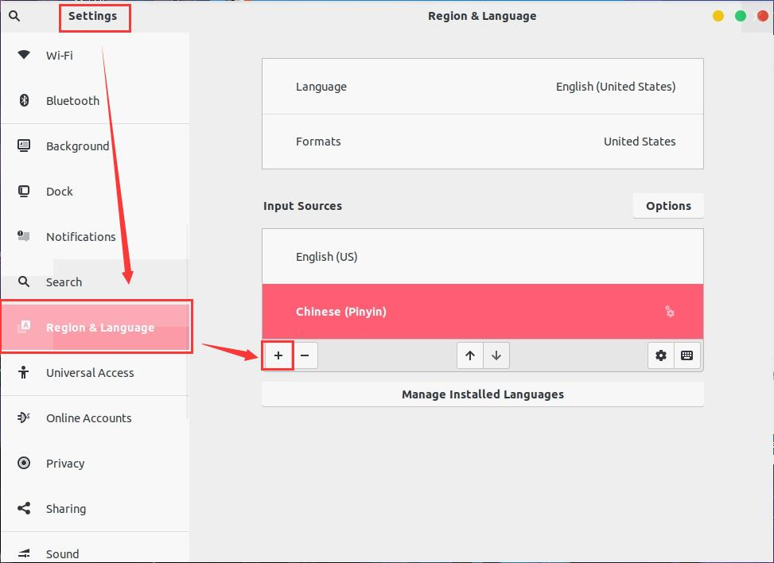

Ubuntu18.04初始配置
写在前面
Ubuntu配置相关
激活 root 用户
- 切换到 root 权限检查是否激活
$ su如果出现su:Authentication failure错误，表明没有激活 root
- 激活 root 方法
$ sudo passwd切换 root 用户
$ su
配置软件源
建议使用软件software&update选择源。更加直观、方便，但是需要图形化界面。
方案一:
首先备份原来的软件源(建议备份)
# cp /etc/apt/source.list /etc/apt/source.list.backup更改软件源，使用编辑器修改/etc/apt/source.list文件
# 此处为阿里镜像源，可以自行调节为其他
deb http://mirrors.aliyun.com/ubuntu/ bionic main restricted universe multiverse
deb-src http://mirrors.aliyun.com/ubuntu/ bionic main restricted universe multiverse
deb http://mirrors.aliyun.com/ubuntu/ bionic-security main restricted universe multiverse
deb-src http://mirrors.aliyun.com/ubuntu/ bionic-security main restricted universe multiverse
deb http://mirrors.aliyun.com/ubuntu/ bionic-updates main restricted universe multiverse
deb-src http://mirrors.aliyun.com/ubuntu/ bionic-updates main restricted universe multiverse
deb http://mirrors.aliyun.com/ubuntu/ bionic-proposed main restricted universe multiverse
deb-src http://mirrors.aliyun.com/ubuntu/ bionic-proposed main restricted universe multiverse
deb http://mirrors.aliyun.com/ubuntu/ bionic-backports main restricted universe multiverse
deb-src http://mirrors.aliyun.com/ubuntu/ bionic-backports main restricted universe multiverse方案二:
阿里源官方文档
实际测试中会导向到外网导致下载速度变慢，可能是没有配置好
建议使用方案一
关于/etc/apt/source.list 中的bionic:bionic为 Ubuntu 18.04 版本代号

如果你的系统为 Ubuntu 的其他版本，配置软件源只需要将bionic替换为系统版本代号即可(适用于大多数情况)
更新
$ sudo apt update
$ sudo apt upgradeupdate
刷新可安装软件列表
update 成功信息
Fetched …
Reading package lists… Done
…
upgrade
进行安装包的更新
安装中文输入法
我使用的输入系统是ibus，需要安装ibus和ibus-pinyin。
个人感觉 ibus 的安装简单，功能也能满足日常需求
sudo apt install ibus ibus-pinyin使用
安装完ibus后可能需要重启
Settings->Region & Lanuage->Input Sources
Chinese->Chinese(Pinyin)->Add
默认快捷键Win+space切换输入法(Win: 一般笔记本电脑上有个窗户图标的按键)
设置
- 点击右上角输入，找到
Preferences进入设置 - 终端中输入
ibus-setup进入设置
tty显示中文
通常情况下在 tty 界面中文会显示为方块活菱形，总之不能正常显示。
解决方法：安装fbterm。
安装命令
sudo apt install fbterm使用
fbterm进入fbterm环境即可显示中文。
comment:
- Valine
- LiveRe
- ChangYan